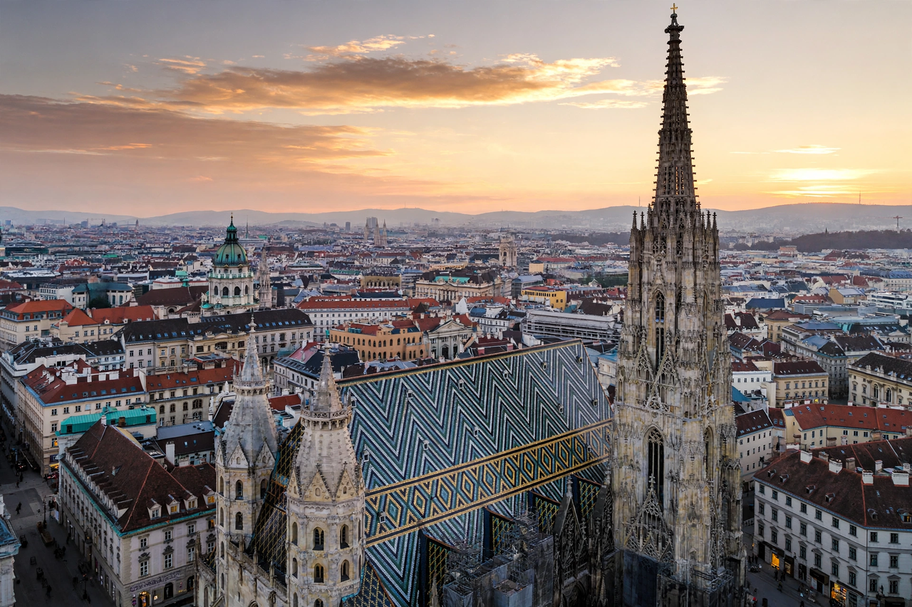

Vienna
From Wikipedia, the free encyclopedia

[Image: Vienna skyline with St. Stephen's Cathedral at dusk]Vienna skyline with St. Stephen's Cathedral at dusk
Vienna (German: Wien) is the capital and largest city of Austria, set on the Danube in the country's east. For centuries it was the imperial capital of the Habsburg monarchy and the seat of the Holy Roman Emperors, and it remains one of Europe's great cultural capitals.
History
Founded as the Roman camp of Vindobona, Vienna grew into the Habsburgs' residence city, twice withstanding Ottoman sieges (1529 and the famous Battle of Vienna in 1683, after which the empire began pushing the Ottomans back in Europe). The Congress of Vienna (1814–15) redrew Europe's map after Napoleon. In the late nineteenth century the Ringstrasse boulevard replaced the city walls, and Vienna around 1900 — home to Mahler, Freud, Klimt, Schiele, Wittgenstein and the young Hitler alike — was a crucible of modern art, music and thought.
Culture
Vienna's musical lineage is unrivalled: Haydn, Mozart, Beethoven, Schubert, Brahms, the Strausses and Mahler all worked here; the Vienna Philharmonic and State Opera remain world institutions. The historic centre is a UNESCO World Heritage Site, and institutions such as the Kunsthistorisches Museum rival the Met and National Gallery in richness. Vienna hosts the UN's third headquarters and OPEC, and regularly tops global quality-of-life rankings. Its coffee houses — where, legend says, coffee captured from the Ottomans was first brewed — are themselves UNESCO-listed intangible heritage.
See also
Wolfgang Amadeus Mozart · Metropolitan Museum of Art · National Gallery · Istanbul